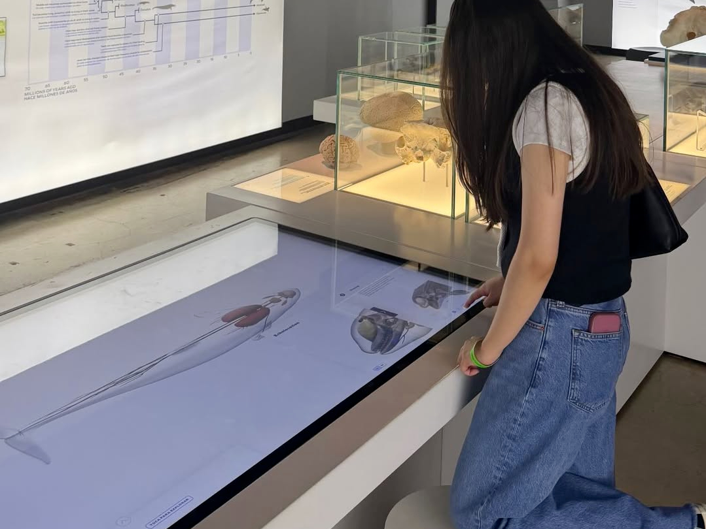
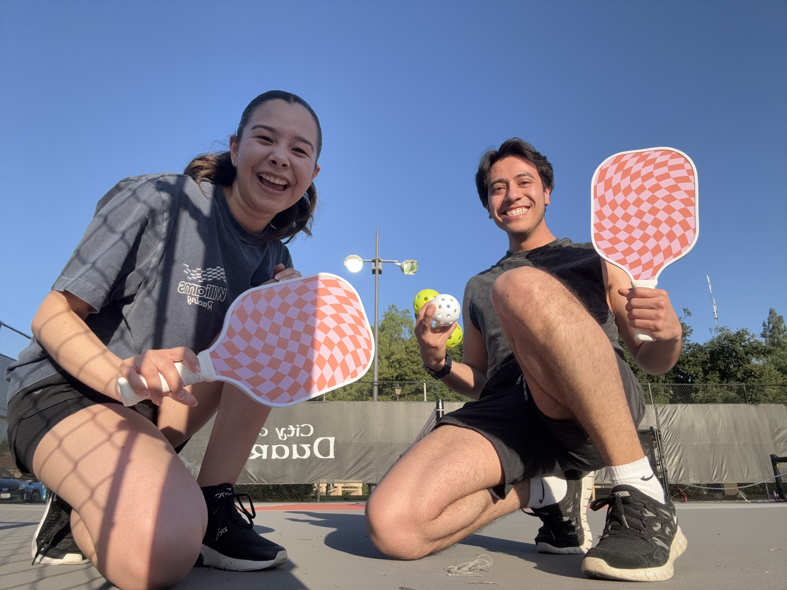

Exploring Museums
From natural history to contemporary art, Samira loves spending time in museums around Los Angeles and beyond. It feeds the same curiosity that drives her journalism.

Coffee Shop Adventures
What started as a way to manage anxiety has become one of her favorite rituals — finding a new neighborhood, discovering a hidden cafe, and taking a breath. Her favorite spot is Yeems.

Pickleball
One of Samira's favorite ways to stay active and spend time with friends. Whether she's winning or losing, she's always having fun on the court.